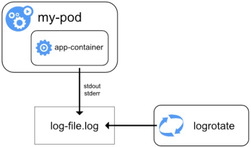

Application Logs
Contents
Application Logs#
Standard Logs#
Refer to List & Describe Pods: Discover Cluster to determine the containerized application
Research (Google) application’s log location (typically at
/var/log)Refer to List & Describe Pods: Discover Cluster to determine if the log location was mapped to an external location (i.e. not within container filesystem)
If Volume Type is
gcePersistentDisk, note thePDNameIf Volume Type is
PersistentVolumeClaim, note theClaimNameand obtain the disk name usingkubectl get pvcIf Volume Type is
hostPath, note thePath(location on the node)If log location is not mapped/mounted to a
gcePersistentDiskorPersistentVolumeClaimorhostPath, it likely means that the logs are stored in the container filesystem (which is ephemeral - deleted when pod is removed from the node)
Persistent Storage#
2 ways of accessing the logs
via a snapshot of the disk#
via the node that is hosting the pod#
Determine which node is hosting the pod using
kubectl describe pod <pod_name>SSH into the node
Access the logs
# ssh into the node
gcloud compute ssh --project=<proj_id> --zone=<zone> <node_name>
# execute the following commands
# list all storage devices and mount points
lsblk
cd <mount_pt>
# access/download the logs
...
Ephemeral Storage (and Container still Running)#
# get container name
kubectl describe pod <pod_name>
kubectl exec <pod-name> [-c <container-name>] -- /bin/sh
cd <log-location>
# access/view the logs
...
stdout / stderr Streams#
A containerized application’s
stdoutandstderrstreams are redirected by the container engine to a logging driver, which is configured in Kubernetes to write to a file in JSON format
Retention (Log File)#
If a pod is evicted (e.g. terminated, replaced) from the node, all corresponding containers are also evicted, along with their logs
If a container restarts, the kubelet keeps one terminated container with its logs, illustrated with the following example:
Pod contains a single container with ID
AAt this time, the node contains logs for
AArestarts and was replaced by a container with IDBAt this time, the node contains logs for
AandBBrestarts and was replaced by a container with IDCAt this time, the node contains logs for
BandC
Default maximum size of the container log file before it is rotated (i.e.
containerLogMaxSize) - 10MiDefault maximum number of container log files that can be present for a container (i.e.
containerLogMaxFiles) - 5
Access#
via
kubectl, where the kubelet on the node handles the request and reads directly from the latest log file
kubectl logs <pod_name>
# if there are multiple pod replicas
# note that output is not in chronological order
kubectl logs -l <selector>
via direct log access
# identify node where pod/container is hosted and container id
kubectl describe pod <pod_name>
# SSH into node
gcloud compute ssh --project=<proj_id> --zone=<zone> <node>
# navigate to log directory
cd /var/log/containers
# access log
cat <pod_name>_<namespace>_<container_name>-<container_id>.log
# alternative log directory (/var/log/containers logs point to here)
cd /var/log/pods/<namespace>_<pod-name>_<GUID>/<container-name>
# access log
cat 0.log
via GCP Log Explorer
resource.type="k8s_container"
logName=("projects/<proj_id>/logs/stderr" OR "projects/<proj_id>/logs/stdout")
resource.labels.pod_name="<pod_name>"
# for multiple pod replicas
resource.type="k8s_container"
logName=("projects/<proj_id>/logs/stderr" OR "projects/<proj_id>/logs/stdout")
labels."k8s-pod/app"="<label>"